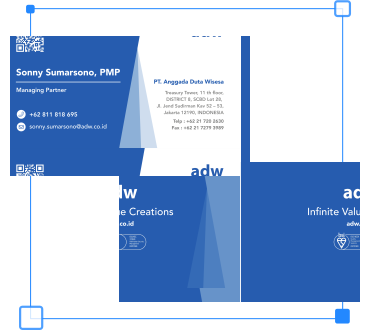
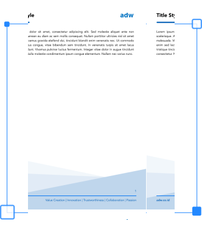
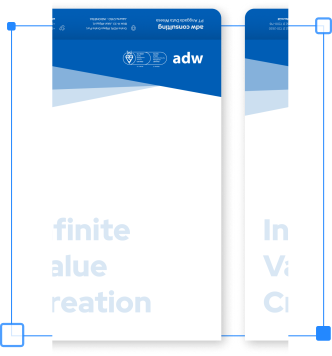

Brand Identity Guideline
Logos & Usage Color Background Supergraphic Typography Marketing Media Print Media MerchandisePrint Media
Gunakan media cetak sebagai sarana untuk menghadirkan merek secara nyata. Panduan ini menjelaskan cara membuat desain cetak yang sesuai dengan pedoman brand.
ID Card
Ukuran yang disarankan adalah 8cm x 13cm. Semua teks menggunakan font Avenir LT Pro.
- Logo ADW diletakkan di bawah kanan sesuai jarak yang ditentukan.
- Foto Diletakan di layer paling belakang, sehingga tidak tidak menutupi desain ornamen.
- Nama Pekerja menggunakan font Avenir LT Pro ukuran menyesuaikan dengan ukuran menyesuaikan sesuai media yang tersedia.
- Nomor Pekerja menggunakan Avenir LT Pro dengan ukuran menyesuaikan sesuai media yang tersedia.

Name Card
Ukuran 7cm x 4cm. Kertas yang disarankan adalah Cougar Opaque White 352gsm. Semua teks menggunakan font Avenir LT Pro.
- Logo ADW diletakkan di kanan atas sesuai jarak yang ditentukan.
- Nama menggunakan font Avenir LT Pro dengan warna putih.
- Jabatan pekerjaan menggunakan font Avenir LT Pro dengan warna putih.
- Nama lengkap Institusi menggunakan font Avenir LT Pro dengan warna biru (#005DB5).
- Alamat & kontak ADW menggunakan font Avenir LT Pro dengan warna hitam.

Letterhead
Ukuran A4. Semua teks menggunakan font Avenir LT Pro.
- Terdapat logo ADW diletakkan di kanan atas dan kiri. warna menyesuaikan kontras background.
- Teks konten font Avenir LT Pro dengan warna hitam.
- Alamat website & value ADW menggunakan font Avenir LT Pro dengan warna biru (#005DB5).

Envelope
Ukuran 23cm x 32cm. Gramatur kertas 300gsm. Semua teks menggunakan font Avenir LT Pro. Format folder yang digunakan adalah vertikal.
- Logo ADW diletakkan di kanan atas sesuai jarak yang ditentukan. warna putih. Serta terdapat ornamen dibagian atas, tepat pada background logo.
- Nama lengkap Institusi, alamat, dan kontak berada di penutup map, dengan background biru dan warna teks putih.
- Terdapat Tagline ADW ”Infinite Value Creation” pada sisi depan bagian kiri bawah.
